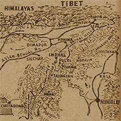

|
j
a v a s c r i p t |
March 17, 1944
FLASH: Father Theo Buttenbruch was taken to Fort Santiago at 0200 today!

Rugged Burmese Terrain
Tribune: "Enemy Forces Start Disorderly Retreat in Chin Hills Area.... Japanese forces now have command of Chittagong Sector — strong pressure brought to bear on Maungdaw." If they're pressing Maungdaw, they don't control the Chittagong sector. "Heavy Casualties inflicted on Enemy in Torokina sector" — 800 to 900. In the capture of the 600-meter hill they found 300 enemy dead — that's one zero more than the Tribune and La Vanguardia mentioned before. News: Americans have landed on Manus in the Admiralties against little opposition. |
|
|
|
|